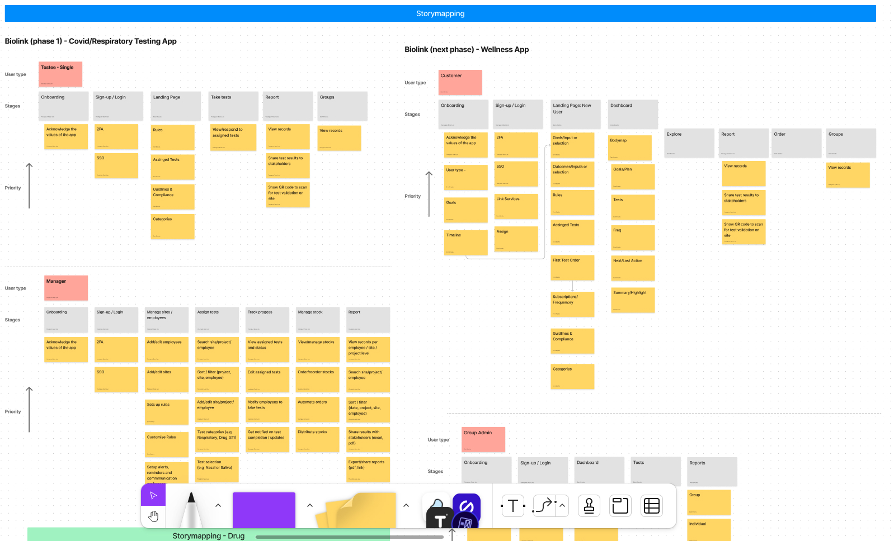
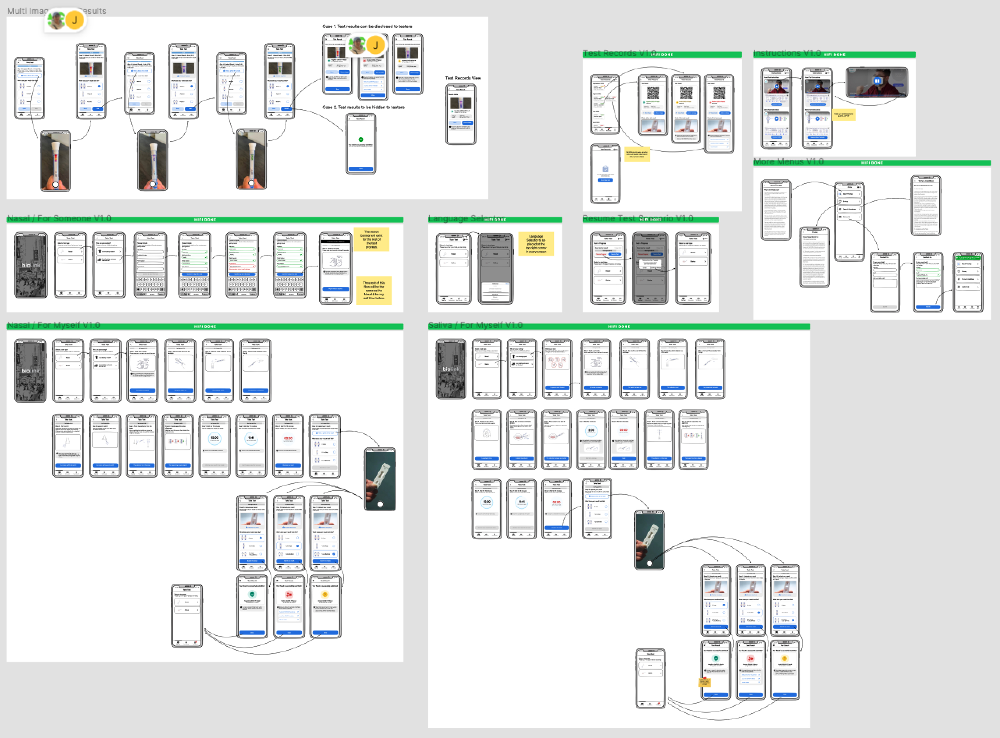
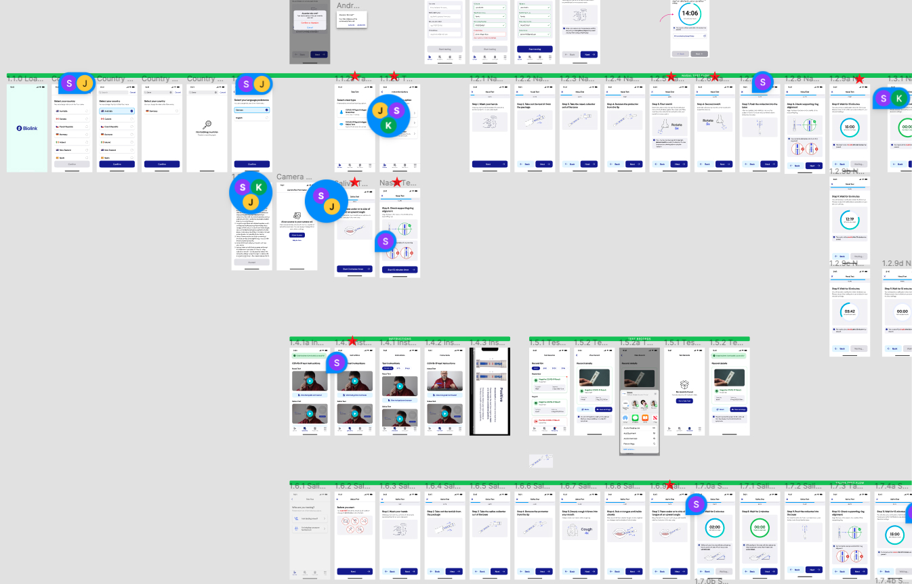
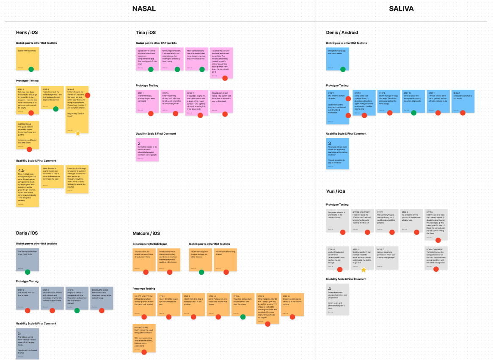

The Biolink project involved the redesign of a testing guide mobile app for the test devices sold by Biolink in the market. The primary objective was to provide users with a convenient and comprehensive solution for conducting various tests, including COVID-19 (nasal/saliva), flu A/B, RSV, and combinations thereof.
One of the key design challenges in this project was to create a rebranded mobile app that would replace the existing app. By incorporating Biolink's branding elements, such as color schemes, typography, and logo, the aim was to establish a cohesive visual identity. Additionally, the project focused on enhancing the usability and functionality of the testing guide, ultimately elevating the overall user experience.
I collaborated closely with stakeholders including the engineering lead, product architect lead, and customer experience specialist to work on story mapping for the Biolink app. This collaborative effort aimed to plan for the future of the app and ensure its continued success. The customer experience specialist played a crucial role in understanding user needs and expectations. His expertise guided us in identifying user stories, pain points, and desired features. This information was invaluable in shaping the app's roadmap and prioritizing key functionalities. Through this collaborative story mapping process, we were able to align the stakeholders' perspectives and collectively plan for the future of the Biolink app. By combining technical considerations, user insights, and development expertise, we set a clear direction for the app's evolution and ensured that it would continue to meet the needs of its users effectively.
To facilitate discussions about the next stage of the project, I used low-fidelity (lo-fi) mockups to visualize ideas and userflows. These simplified mockups allowed stakeholders to easily understand and provide feedback on potential features that could be included or removed from the app. This approach helped us have productive discussions and make informed decisions about the app's future direction.
Based on the informed decisions from the lo-fi mockup discussions, I proceeded to create high-fidelity (hi-fi) designs for the Biolink app while incorporating the new branding elements. The goal was to ensure that the new designs not only aligned with the Biolink brand but also enhanced usability and provided clear guidance for users during the testing process, ultimately elevating the overall user experience.
To validate the effectiveness of the new hi-fi designs, I conducted user testing sessions. Since internal employees were already using the test kits and the app for managing safety in the workplace, I was able to recruit actual users from within the organization. These users had not been involved in the design process and were experiencing the new app for the first time during the testing sessions.
During the user testing phase, I recruited two distinct groups of participants to focus on specific testing scenarios. One group was assigned to perform nasal tests, while the other group focused on saliva tests. These targeted scenarios allowed us to gather valuable feedback and insights specific to each testing method.
By involving actual users in the testing process, we could gather authentic feedback and make necessary adjustments to enhance the app's usability and overall user experience. The insights gained from user testing played a crucial role in refining the designs before final implementation, resulting in a user-friendly app that effectively guided users through the testing process.
After conducting the user testing sessions with all the participants, I carefully synthesized the insights gathered from their feedback and observations. These valuable insights were then shared with the stakeholders to inform them about what we learned from the testing process and to guide the decision-making process for improving the current design.
Key User Feedback:
During the iteration phase of the Biolink app design, I incorporated critical user feedback to enhance the user experience. This included communicating the missing prerequisite information on the test kit to the marketing team, adding a shortcut for submitting results or accessing timers within the app, and updating texts and illustrations to minimise confusion for users.